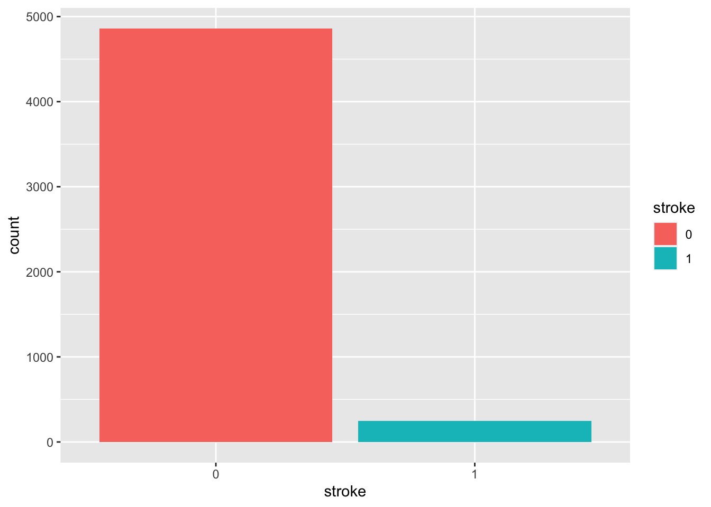
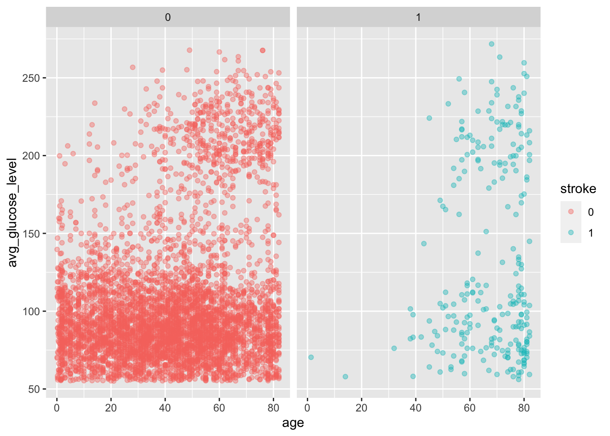

Classification
Rica Rebusit
5/11/2022
Introduction
In this blog post, I will be using classification models in the tidy models framework. I will be predicting stroke using this data set from kaggle: Click Me
Variables
id: The patient’s identity number
gender: The gender the patient identifies as. ‘Male’, ‘Female’, or ‘Other’
age: Age of the patient in years
hypertension: If patient has hypertension or high blood pressure. 0 for no and 1 for yes
heart_disease: If patient has heart disease. 0 for no and 1 for yes
ever_married: If the patient has been married. Yes for yes and no for no
work_type: The type of employment the patient is in. ‘Private’, ‘Self-employed’, ‘Government job’, ‘Never_worked’, or people who do not have a job which is ‘chilren’
Residence_type: The type of area where the patient lives. ‘Urban’ or ‘Rural’
average_glucose_level: Average glucose level of the patient. Measures the level of sugar in a patient’s blood and tests for diabetes. The normal average glucose varies by age.
bmi: Body Mass Index of patient
smoking_status: If the patient smokes, never smokes, smoked before, or unknown
stroke: If the patient had a stroke. 0 for no and 1 for yes
Cleaning Up
stroke <- read.csv("~/Downloads/healthcare-dataset-stroke-data.csv")
summary(stroke)## id gender age hypertension
## Min. : 67 Length:5110 Min. : 0.08 Min. :0.00000
## 1st Qu.:17741 Class :character 1st Qu.:25.00 1st Qu.:0.00000
## Median :36932 Mode :character Median :45.00 Median :0.00000
## Mean :36518 Mean :43.23 Mean :0.09746
## 3rd Qu.:54682 3rd Qu.:61.00 3rd Qu.:0.00000
## Max. :72940 Max. :82.00 Max. :1.00000
## heart_disease ever_married work_type Residence_type
## Min. :0.00000 Length:5110 Length:5110 Length:5110
## 1st Qu.:0.00000 Class :character Class :character Class :character
## Median :0.00000 Mode :character Mode :character Mode :character
## Mean :0.05401
## 3rd Qu.:0.00000
## Max. :1.00000
## avg_glucose_level bmi smoking_status stroke
## Min. : 55.12 Length:5110 Length:5110 Min. :0.00000
## 1st Qu.: 77.25 Class :character Class :character 1st Qu.:0.00000
## Median : 91.89 Mode :character Mode :character Median :0.00000
## Mean :106.15 Mean :0.04873
## 3rd Qu.:114.09 3rd Qu.:0.00000
## Max. :271.74 Max. :1.00000str(stroke)## 'data.frame': 5110 obs. of 12 variables:
## $ id : int 9046 51676 31112 60182 1665 56669 53882 10434 27419 60491 ...
## $ gender : chr "Male" "Female" "Male" "Female" ...
## $ age : num 67 61 80 49 79 81 74 69 59 78 ...
## $ hypertension : int 0 0 0 0 1 0 1 0 0 0 ...
## $ heart_disease : int 1 0 1 0 0 0 1 0 0 0 ...
## $ ever_married : chr "Yes" "Yes" "Yes" "Yes" ...
## $ work_type : chr "Private" "Self-employed" "Private" "Private" ...
## $ Residence_type : chr "Urban" "Rural" "Rural" "Urban" ...
## $ avg_glucose_level: num 229 202 106 171 174 ...
## $ bmi : chr "36.6" "N/A" "32.5" "34.4" ...
## $ smoking_status : chr "formerly smoked" "never smoked" "never smoked" "smokes" ...
## $ stroke : int 1 1 1 1 1 1 1 1 1 1 ...head(stroke)## id gender age hypertension heart_disease ever_married work_type
## 1 9046 Male 67 0 1 Yes Private
## 2 51676 Female 61 0 0 Yes Self-employed
## 3 31112 Male 80 0 1 Yes Private
## 4 60182 Female 49 0 0 Yes Private
## 5 1665 Female 79 1 0 Yes Self-employed
## 6 56669 Male 81 0 0 Yes Private
## Residence_type avg_glucose_level bmi smoking_status stroke
## 1 Urban 228.69 36.6 formerly smoked 1
## 2 Rural 202.21 N/A never smoked 1
## 3 Rural 105.92 32.5 never smoked 1
## 4 Urban 171.23 34.4 smokes 1
## 5 Rural 174.12 24 never smoked 1
## 6 Urban 186.21 29 formerly smoked 1stroke$stroke <- as.factor(stroke$stroke)
stroke$gender <- as.factor(stroke$gender)
stroke$hypertension <- as.factor(stroke$hypertension)
stroke$heart_disease <- as.factor(stroke$heart_disease)
stroke$ever_married <- as.factor(stroke$ever_married)
stroke$work_type <- as.factor(stroke$work_type)
stroke$Residence_type <- as.factor(stroke$Residence_type)
stroke$smoking_status <- as.factor(stroke$smoking_status)
str(stroke)## 'data.frame': 5110 obs. of 12 variables:
## $ id : int 9046 51676 31112 60182 1665 56669 53882 10434 27419 60491 ...
## $ gender : Factor w/ 3 levels "Female","Male",..: 2 1 2 1 1 2 2 1 1 1 ...
## $ age : num 67 61 80 49 79 81 74 69 59 78 ...
## $ hypertension : Factor w/ 2 levels "0","1": 1 1 1 1 2 1 2 1 1 1 ...
## $ heart_disease : Factor w/ 2 levels "0","1": 2 1 2 1 1 1 2 1 1 1 ...
## $ ever_married : Factor w/ 2 levels "No","Yes": 2 2 2 2 2 2 2 1 2 2 ...
## $ work_type : Factor w/ 5 levels "children","Govt_job",..: 4 5 4 4 5 4 4 4 4 4 ...
## $ Residence_type : Factor w/ 2 levels "Rural","Urban": 2 1 1 2 1 2 1 2 1 2 ...
## $ avg_glucose_level: num 229 202 106 171 174 ...
## $ bmi : chr "36.6" "N/A" "32.5" "34.4" ...
## $ smoking_status : Factor w/ 4 levels "formerly smoked",..: 1 2 2 3 2 1 2 2 4 4 ...
## $ stroke : Factor w/ 2 levels "0","1": 2 2 2 2 2 2 2 2 2 2 ...str(stroke$bmi)## chr [1:5110] "36.6" "N/A" "32.5" "34.4" "24" "29" "27.4" "22.8" "N/A" ...stroke$bmi <- as.numeric(stroke$bmi)## Warning: NAs introduced by coercionstroke$bmi[is.na(stroke$bmi)] <- mean(stroke$bmi,na.rm=TRUE)stroke <- select(stroke, -c("id"))
head(stroke)## gender age hypertension heart_disease ever_married work_type
## 1 Male 67 0 1 Yes Private
## 2 Female 61 0 0 Yes Self-employed
## 3 Male 80 0 1 Yes Private
## 4 Female 49 0 0 Yes Private
## 5 Female 79 1 0 Yes Self-employed
## 6 Male 81 0 0 Yes Private
## Residence_type avg_glucose_level bmi smoking_status stroke
## 1 Urban 228.69 36.60000 formerly smoked 1
## 2 Rural 202.21 28.89324 never smoked 1
## 3 Rural 105.92 32.50000 never smoked 1
## 4 Urban 171.23 34.40000 smokes 1
## 5 Rural 174.12 24.00000 never smoked 1
## 6 Urban 186.21 29.00000 formerly smoked 1Quick Exploratory Data Analysis
ggplot(stroke, aes(stroke, fill=stroke)) + geom_bar()
Seems like an imbalance in data. More people have not had a stroke than people who do
ggplot(stroke, aes(age, avg_glucose_level, color = stroke)) + geom_point(alpha = 0.4) + facet_wrap(~stroke)
People who have had strokes are mostly elderly
ggplot(stroke, aes(bmi, fill=stroke)) + geom_histogram() ## `stat_bin()` using `bins = 30`. Pick better value with `binwidth`.
Classification - Logistic Regression
par.spec <- logistic_reg() %>%
set_mode("classification") %>%
set_engine("glm")
lm.fit <- par.spec %>%
fit(stroke ~ age + gender + hypertension + heart_disease + avg_glucose_level + bmi + smoking_status, data=stroke)
tidy(lm.fit)## # A tibble: 11 × 5
## term estimate std.error statistic p.value
## <chr> <dbl> <dbl> <dbl> <dbl>
## 1 (Intercept) -7.52 0.540 -13.9 4.57e-44
## 2 age 0.0697 0.00531 13.1 2.15e-39
## 3 genderMale 0.0154 0.141 0.109 9.13e- 1
## 4 genderOther -7.48 325. -0.0230 9.82e- 1
## 5 hypertension1 0.394 0.164 2.40 1.64e- 2
## 6 heart_disease1 0.299 0.190 1.57 1.16e- 1
## 7 avg_glucose_level 0.00409 0.00119 3.43 6.09e- 4
## 8 bmi 0.00163 0.0111 0.146 8.84e- 1
## 9 smoking_statusnever smoked -0.202 0.175 -1.16 2.48e- 1
## 10 smoking_statussmokes 0.113 0.214 0.530 5.96e- 1
## 11 smoking_statusUnknown -0.0411 0.206 -0.199 8.42e- 1ml <- initial_split(stroke, prop=.75, strata=stroke)
train <- ml %>%
training()
test <- ml %>%
testing()
prediction <- predict(lm.fit, new_data=test, type="class")
probability <- predict(lm.fit, new_data=test, type="prob")
test.train <- test %>%
select(stroke) %>%
bind_cols(prediction,probability)
test.train[1:5, ]## stroke .pred_class .pred_0 .pred_1
## 1 1 0 0.9308617 0.06913830
## 2 1 0 0.9622415 0.03775852
## 3 1 0 0.8216716 0.17832837
## 4 1 0 0.9236410 0.07635905
## 5 1 0 0.9229082 0.07709178conf_mat(test.train, truth= stroke, estimate= .pred_class)## Truth
## Prediction 0 1
## 0 1214 64
## 1 0 0accuracy(test.train, truth= stroke, estimate= .pred_class)## # A tibble: 1 × 3
## .metric .estimator .estimate
## <chr> <chr> <dbl>
## 1 accuracy binary 0.950Accuracy is about 95%
Classification - Linear Discriminant Analysis (LDA)
Make sure to load in library(discrim)
lda <- discrim_linear() %>%
set_mode("classification") %>%
set_engine("MASS")
lda.fit <- lda %>%
fit(stroke ~ age + gender + hypertension + heart_disease + avg_glucose_level + bmi + smoking_status, data=stroke)
lda.fit## parsnip model object
##
## Call:
## lda(stroke ~ age + gender + hypertension + heart_disease + avg_glucose_level +
## bmi + smoking_status, data = data)
##
## Prior probabilities of groups:
## 0 1
## 0.95127202 0.04872798
##
## Group means:
## age genderMale genderOther hypertension1 heart_disease1
## 0 41.97154 0.4128780 0.000205719 0.0888706 0.04710965
## 1 67.72819 0.4337349 0.000000000 0.2650602 0.18875502
## avg_glucose_level bmi smoking_statusnever smoked smoking_statussmokes
## 0 104.7955 28.82539 0.3707056 0.1536721
## 1 132.5447 30.21779 0.3614458 0.1686747
## smoking_statusUnknown
## 0 0.3079613
## 1 0.1887550
##
## Coefficients of linear discriminants:
## LD1
## age 0.037010927
## genderMale 0.002361466
## genderOther -0.487323572
## hypertension1 0.759676871
## heart_disease1 1.022724281
## avg_glucose_level 0.005746359
## bmi -0.023781349
## smoking_statusnever smoked -0.182754282
## smoking_statussmokes -0.116287646
## smoking_statusUnknown 0.160561765ml2 <- initial_split(stroke, prop=.75, strata=stroke)
train2 <- ml2 %>%
training()
test2 <- ml2 %>%
testing()
prediction2 <- predict(lda.fit, new_data=test2, type="class")
probability2 <- predict(lda.fit, new_data=test2, type="prob")
test.train2 <- test2 %>%
select(stroke) %>%
bind_cols(prediction2,probability2)
test.train[1:5, ]## stroke .pred_class .pred_0 .pred_1
## 1 1 0 0.9308617 0.06913830
## 2 1 0 0.9622415 0.03775852
## 3 1 0 0.8216716 0.17832837
## 4 1 0 0.9236410 0.07635905
## 5 1 0 0.9229082 0.07709178conf_mat(test.train2, truth= stroke, estimate= .pred_class)## Truth
## Prediction 0 1
## 0 1208 58
## 1 7 5accuracy(test.train2, truth= stroke, estimate= .pred_class)## # A tibble: 1 × 3
## .metric .estimator .estimate
## <chr> <chr> <dbl>
## 1 accuracy binary 0.949Accuracy is about 93-95%
Classification - Quadratic Discriminant Analysis (QDA)
qda <- discrim_quad() %>%
set_mode("classification") %>%
set_engine("MASS")
qda.fit <- qda %>%
fit(stroke ~ age + heart_disease + avg_glucose_level + bmi + hypertension + smoking_status, data=stroke)
ml3 <- initial_split(stroke, prop=.75, strata=stroke)
train3 <- ml3 %>%
training()
test3 <- ml3 %>%
testing()
prediction3 <- predict(qda.fit, new_data=test3, type="class")
probability3 <- predict(qda.fit, new_data=test3, type="prob")
test.train3 <- test3 %>%
select(stroke) %>%
bind_cols(prediction3,probability3)
test.train[1:5, ]## stroke .pred_class .pred_0 .pred_1
## 1 1 0 0.9308617 0.06913830
## 2 1 0 0.9622415 0.03775852
## 3 1 0 0.8216716 0.17832837
## 4 1 0 0.9236410 0.07635905
## 5 1 0 0.9229082 0.07709178conf_mat(test.train3, truth= stroke, estimate= .pred_class)## Truth
## Prediction 0 1
## 0 1092 45
## 1 109 32accuracy(test.train3, truth= stroke, estimate= .pred_class)## # A tibble: 1 × 3
## .metric .estimator .estimate
## <chr> <chr> <dbl>
## 1 accuracy binary 0.879Accuracy is lowered and is now about 87-89%
Classification - K Nearest Neighbors
Make sure to load in library(kknn)
knn <- nearest_neighbor(neighbors=1) %>%
set_mode("classification") %>%
set_engine("kknn")
knn.fit <- knn %>%
fit(stroke ~ age + gender + hypertension + heart_disease + avg_glucose_level + bmi + smoking_status, data=stroke)
ml4 <- initial_split(stroke, prop=.75, strata=stroke)
train4 <- ml4 %>%
training()
test4 <- ml4 %>%
testing()
prediction4 <- predict(qda.fit, new_data=test4, type="class")
probability4 <- predict(qda.fit, new_data=test4, type="prob")
test.train4 <- test4 %>%
select(stroke) %>%
bind_cols(prediction4,probability4)
test.train[1:5, ]## stroke .pred_class .pred_0 .pred_1
## 1 1 0 0.9308617 0.06913830
## 2 1 0 0.9622415 0.03775852
## 3 1 0 0.8216716 0.17832837
## 4 1 0 0.9236410 0.07635905
## 5 1 0 0.9229082 0.07709178conf_mat(test.train4, truth= stroke, estimate= .pred_class)## Truth
## Prediction 0 1
## 0 1117 41
## 1 102 18accuracy(test.train4, truth= stroke, estimate= .pred_class)## # A tibble: 1 × 3
## .metric .estimator .estimate
## <chr> <chr> <dbl>
## 1 accuracy binary 0.888Accuracy is about 88%
Conclusion
It looks like a logisitic regression or LDA makes better predictions in stroke as their accuracy are within 93-95%